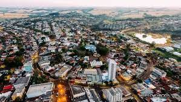

Outrora povoada pelos índios Guaranis, a região da atual cidade de Ivaiporã foi colonizada por brasileiros de várias regiões do Brasil, na década de 1940. Estes pioneiros tinham como principal atividade, a criação de porcos e a exploração de madeira, principalmente os colonos oriundos de Santa Catarina (estes descendentes de ucranianos, poloneses, italianos e alemães). Por outro lado, os pioneiros oriundos de Minas Gerais, São Paulo e Bahia, investiram na agricultura, principalmente na plantação do café.[6] Mais tarde, a empresa "Colonizadora Ubá" recebeu a autorização de exploração das terras e organizou minifúndios, transformando a região num dos últimos eldorados do Paraná.[6] Na década de 1970, com o título de "capital mundial do milho", a cidade tinha como referências econômicas, a exploração de plantio de cereais, como o feijão, o milho, além do algodão, entre outros, sendo aberta várias cooperativas.[6] Em 1951, era conhecida como Distrito de Ivainópolis, recém desmembrada do distrito de Manuel Ribas e incorporado ao município de Pitanga. Em 1955, tornou-se distrito da cidade de Manoel Ribas, quando passa a ser denominada de Ivaiporã.[6] Em 25 de julho de 1960 é elevada a categoria de município
A população da cidade de Ivaiporã (PR) chegou a 32.720 pessoas no Censo de 2022, o que representa um aumento de 2,71% em comparação com o Censo de 2010. Os resultados foram divulgados nesta quarta-feira (28) pelo Instituto Brasileiro de Geografia e Estatística (IBGE). Os dados do Censo também revelam que a população do Brasil é de 203.062.512, um aumento de 6,45% em relação ao Censo de 2010. No estado do Paraná, a população é de 11.443.208, o que representa um aumento de 9,56% quando comparado ao Censo anterior.